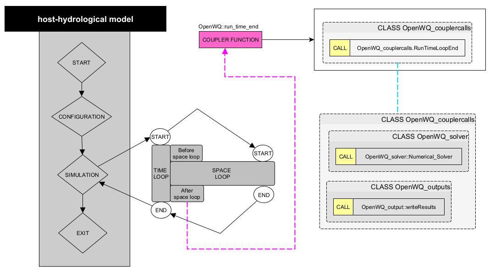

Steps to perform the coupling¶
To couple OpenWQ to an hydro-model, you need to call OpenWQ’s coupler functions that contain a series of API calls.
The coupler functions provided are generic and were designed to require minimal editing, but each hydro-model is different so some adjustments are always needed. We refer to there adjustments as COUPLER CODE.
This editable COUPLER CODE is to ensure that the data types used in the hydro-model are properly converted to OpenWQ’s own data types, so that the API calls can perform adequately.
We suggest to place all the coupler calls inside the same file and name it OpenWQ_hydrolink.cpp.
It may be convenient to have an header file with the same name (OpenWQ_hydrolink.h).
An example of these OpenWQ_hydrolink files can be seen here.
Inside these hydrolink files, we also suggest that the couplers are placed inside a class with the name OpenWQ.
However, all the steps described below, as well as the class names, consider these suggestions.
For now, don’t worry with editing the COUPLER CODE; it’s the last step in the coupling process.
Bellow are all the steps you need to perform the coupling:
STEP 1: Hydro-model structure¶
Identify the following components of your hydro-model. It is important that you understand the source code of your model.

STEP 2: Get OpenWQ¶
To download OpenWQ in your machine, follow the steps indicated in section Get OpenWQ.
STEP 3: Create class objects¶
Before you can call OpenWQ’s coupler functions, you need to create OpenWQ class objects inside your hydro-model. This can be accomplished by introducing the code below inside your hydro-model.
This code should be placed in a main function of your hydro-model from where the created objects objects can be passed to OpenWQ’s coupler functions.
This is a critical step since these objects are input arguments of the different OpenWQ’s APIs (passed by reference).
// Include OpenWQ header files
#include "<path>/OpenWQ_couplercalls.h"
#include "<path>/OpenWQ_global.h"
#include "<path>/OpenWQ_readjson.h"
#include "<path>/OpenWQ_initiate.h"
#include "<path>/OpenWQ_chem.h"
#include "<path>/OpenWQ_watertransp.h"
#include "<path>/OpenWQ_sinksource.h"
#include "<path>/OpenWQ_units.h"
#include "<path>/OpenWQ_solver.h"
#include "<path>/OpenWQ_output.h"
// Create OpenWQ Class Objects
OpenWQ_couplercalls OpenWQ_couplercalls; // Class that contains coupler functions
OpenWQ_hostModelconfig OpenWQ_hostModelconfig; // Class that stores hydro-model info
OpenWQ_json OpenWQ_json; // Class that stores JSON input data
OpenWQ_wqconfig OpenWQ_wqconfig(''); // Class that contains configuration functions
OpenWQ_units OpenWQ_units; // Class that contains unit conversion functions
OpenWQ_readjson OpenWQ_readjson; // Class that contains functions to read and process JSON files
int num_HydroComp = <number_of_compartments>; // Set number of compartments/domains of the hydro-model
OpenWQ_vars OpenWQ_vars(num_HydroComp); // Class that stores global variables
OpenWQ_initiate OpenWQ_initiate; // Class tht contains pre-processing and initiation functions
OpenWQ_watertransp OpenWQ_watertransp; // Class that contains water transport functions
OpenWQ_chem OpenWQ_chem; // Cass that contains biogeochemical functions
OpenWQ_sinksource OpenWQ_sinksource; // Cass that contains functions related to sinks and sources
OpenWQ_solver OpenWQ_solver; // Class containing solvers
OpenWQ_output OpenWQ_output; // Class containing printing functions
// Include hydrolink header file
#include "<path>/OpenWQ_hydrolink.h"
STEP 4: Locate coupler functions¶
Referring to the diagram in STEP 1, now you need to identify the main functions or code blocks of your hydro-model that are responsible for the tasks listed below.
[
CONFIGURATION][
SIMULATION>TIME LOOP>Before space loop][
SPACE LOOP][
SIMULATION>TIME LOOP>After space loop]
STEP 5: Call coupler functions¶
- From each of those hydro-model functions or code blocks, call the following OpenWQ coupler functions:
[
CONFIGURATION]: call Coupler Function 1 (OpenWQ::decl)[
SIMULATION>TIME LOOP>Before space loop]: call Coupler Function 2 (OpenWQ::run_time_start)[
SPACE LOOP]: call Coupler Function 3 (OpenWQ::run_space)[
SIMULATION>TIME LOOP>After space loop]: Coupler Function 4 (OpenWQ::run_time_end)
The diagram below shows these coupler calls:

STEP 6: Adjust coupler to hydro-model¶
OpenWQ’s coupler functions are generic and have been designed to require minimal editing. However, as previously said, each hydro-model is different and small adjustments are needed to ensure the hydro-model passes the correct arguments to OpenWQ’s APIs.
The diagrams below list code editing needed, identified as COUPLE CODE.
Coupler Function 1 (
OpenWQ::decl)
This coupler function contains a series of API calls that deal with the initial configuration of the model, initialization of variables, and pre-processing of the input data.
{kind=link}
Coupler Function 2 (
OpenWQ::run_time_start)
This coupler function contains a series of API calls that handle tasks required at the start of each time step.

Coupler Function 3 (
OpenWQ::run_space)
This coupler function contains a series of API calls that handles tasks related to the spatial domain of the model.
{kind=link}
Coupler Function 4 (
ClassWQ_OpenWQ::OpenWQ::run_time_end)
This coupler call function contains a series of API calls that handle tasks required at the end of each time step.
{kind=link}
STEP 7: Compile your coupled code¶
Now you need to adapt your MakeFile or ‘CMakeLists files to properly link and compile OpenWQ together with your hydro-model.
- Include flags for external libraries:
Armdadillo (fag:
--larmadillo)OpenMP (flag:
-fopenmp)
Link OpenWQ objects in your compilation instruction:
<path>/OpenWQ_couplercalls.o \
<path>/OpenWQ_hydrolink.o \
<path>/OpenWQ_readjson.o \
<path>/OpenWQ_initiate.o \
<path>/OpenWQ_chem.o \
<path>/OpenWQ_watertransp.o \
<path>/OpenWQ_sinksource.o \
<path>/OpenWQ_units.o \
<path>/OpenWQ_solver.o \
<path>/OpenWQ_output.o \